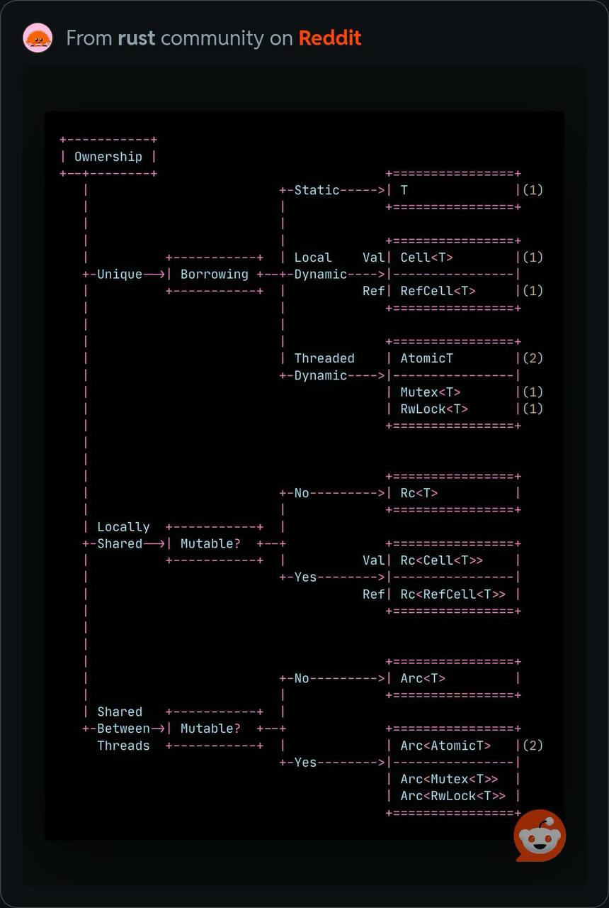

Rust Ownership
Rust 其中一個很重要的概念是 ownership。 Ownership 代表著有人要專門負責釋放沒有使用的記憶體，而不是靠著手動釋放或是系統的回收機制(Garbage Collection)。 手動釋放的方式（如傳統的 C/C++）容易造成開發者忘記 free，導致有 memory leak 的狀況。 另一方面 Garbage Collection（如 Java）則是因為要定期檢查回收記憶體，造成效能不佳。
透過 ownership 機制，Rust 可以在維持效率的同時，又能確保程式的安全性。
borrow & own
需要區分 borrow 和 own 兩個概念
- 如果是 owner，可以對變數做任何事情，因為它會負責釋放
- 如果是 borrow，那只能讀取變數，不能修改變數
- 如果是 mutuable borrow，那可以修改變數，但是不能 move / destroy，因為最終還是要還給 owner 的
struct Basket {
pub fruit: String,
}
fn try_remove_fruit(b: &mut Basket) {
//let _fruit = b.fruit; // 會編譯失敗，因為 b.fruit 會被移走
}
pub fn main() {
let mut b = Basket { fruit: "Apple".to_owned()};
try_remove_fruit(&mut b); // 借用 b
let _fruit = b.fruit; // 前面儘管有借用，後面 b 還是可以繼續使用
}
mutable & immutable
如果想要取得某個變數的 mutable reference，那個變數一定要是 mutable 的
mutable reference 代表著目前它是唯一的引用，因為沒有其他引用，所以才可以更改該變數
let mut s = "Hello".to_owned();
// r 不可變，但是指向的內容可以被改變
let r: &mut String = &mut s;
// r 也可變
let mut r: &mut String = &mut s;
Copy & Clone
實現 Copy 的類型的一定也是 Clone 的類型，Clone 是 Supertrait
Copy 的特性：
- 只會完全複製 stack 的資料，不管 heap
- 實作包在 Rust 內部，開發者無法修改
- 觸發的時間點在幾個地方觸發：給值、參數傳入、回傳結果
- 類型中的所有成員都必須是 Copy、並且沒有實現 Drop，該類型才能是 Copy
Clone 的特性：
- 複製 stack / heap 的資料都可以
- 開發者必須要實作
Clone::clone(&self) - 觸發複製的時間點只有呼叫
Clone::clone(&self)的時候 - 類型沒有特別限制
實際使用
Rc & Arc: shared ownership
雖然每個變數只能有一個 owner，但是總是有需要有多個 owner 的情況，這樣程式也比較好寫
- Rc: single thread 中的 reference counter，可以共享所有權
use std::rc::Rc;
fn main() {
let v1 = Rc::new(1);
let v2 = v1.clone();
let v3 = v2.clone();
// v1, v2, v3 都有 ownership
}
- Arc: multi-thread 中的 reference counter，A 代表 atomic
如果在多線程的情況，我們需要確保 reference counter 的操作不會有 race condition 的問題，所以要改用 Arc
use std::sync::Arc;
use std::thread;
fn main() {
// 用 Arc 包住 data
let data = Arc::new(5);
let mut handles = vec![];
for _ in 0..3 {
// Clone data，並放入其他 thread
let data_clone = Arc::clone(&data);
let handle = thread::spawn(move || {
println!("value = {}", data_clone);
});
handles.push(handle);
}
for handle in handles {
handle.join().unwrap();
}
}
RefCell: mixed mutable & immutable
RefCell 讓變數擁有內部可變性，也就是讓不可變的值進行可變借用
嚴格來說就是讓擁有者不一定需要有 mutable 才能修改內部，藉此避開只能一個 mutable 的問題(各個擁有者都是 immutable，所以不違反 Rust 原則)
然而實際執行的時候就會真的見真章了，runtime 還是會檢查 mutable 和 immutable 混用的問題
use std::cell::RefCell;
fn main() {
let v = RefCell::new(vec![1, 2, 3]);
v.borrow_mut().push(4);
for val in v.borrow().iter() {
println!("{}", val);
}
}
Rc + RefCell 共同使用
| Rust 規則 | Wrapper 帶來的改變 |
|---|---|
| 每個資料只能有一個擁有者 | Rc/Arc 可以讓資料有多個擁有者 |
| 只能一個 mutable 或是多個 immutable | RefCell 可以作到 compile 時 mutable 和 immutable 共存，但是 runtime 如果錯誤會 panic |
use std::cell::RefCell;
use std::rc::Rc;
fn main() {
let s = Rc::new(RefCell::new("Hello".to_owned()));
// 產生多個 owner
let s1 = s.clone();
let s2 = s.clone();
// 針對其中一個 owner 進行 mutable borrow
s2.borrow_mut().push_str(" World!");
println!("{:?}\n{:?}\n{:?}", s, s1, s2);
}
各種組合
這些概念單一來看其實都很簡單，但是組合在一起就會變得複雜，有時候我們也都不知道什麼情境該用什麼樣的組合。 下面有一張在 Reddit 上很好的圖，可以總結 Ownership 搭配各個 smart pointer 的使用

一般 Unique 的情況就是遵守 Rust 的 ownership 機制，只能有單一個擁有者。 如果要有多個擁有者，那就必須要根據是否為多線程來決定使用 Rc 還是 Arc。
除了 Ownership，還有個概念就做 Accessibility，代表誰可以去存取這個變數。 在 Unique 情況下，我們不需要有 Ownership，可以用 borrow 的方式來存取。 然而如果是在單一線程下，我們想要多一點彈性，不要編譯器幫我們做 accessibility 的檢查，這時候就需要使用 Cell 或 RefCell。 而在多線程的情況，那就必須要使用 Atomic、Mutex、或是 RwLock 了。